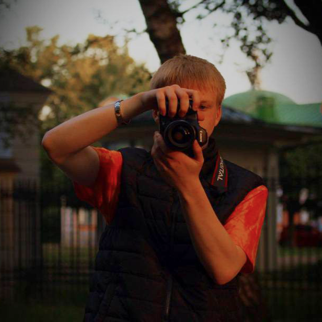

Расскажите о вашей съёмке

бриф на фотосъёмку
Опишите задумку и детали: я пойму, что вам важно, и подготовлюсь к съёмке.
- 7 этаповпо 3–5 вопросов на каждом экране
- 10 минутсвоими словами, как в переписке
- Черновиксохраняется сам: продолжите позже
Вопросы со звёздочкой * обязательные, остальные по желанию.
бриф отправлен
Спасибо!
Я получил ваш бриф и скоро с вами свяжусь.
Что дальше
- В течение 1–2 рабочих дней внимательно прочитаю ответы и напишу вам в удобный мессенджер.
- Предложу формат и смету: место, длительность, команду, сроки обработки.
- Договоримся о дате и вместе соберём образы и референсы, чтобы в день съёмки думать только о кадрах.